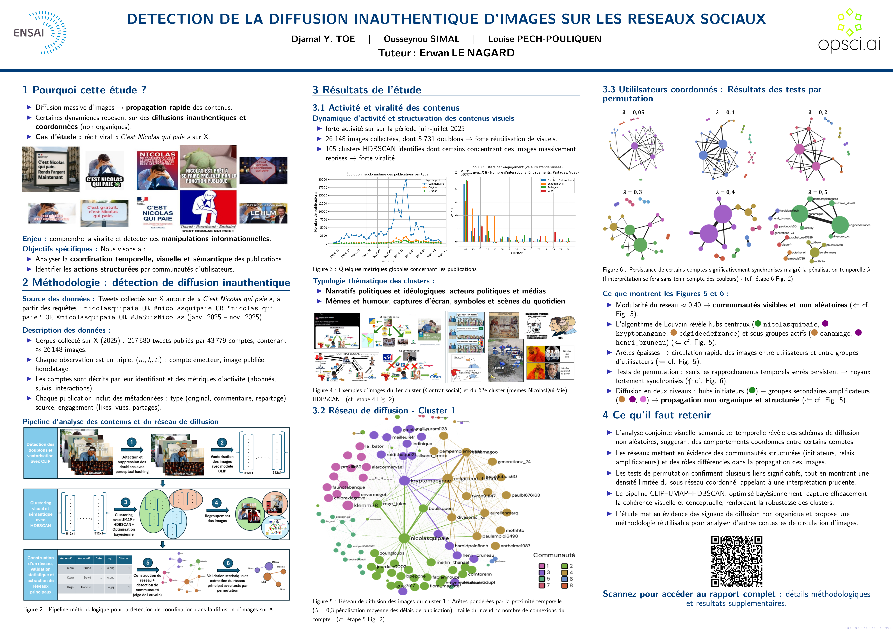

The project studied how images circulated across a large set of social-media posts, to see whether some diffusion patterns looked coordinated rather than spontaneous.
Do visually similar posts spreading at the same time reveal coordinated behaviour?
Image similarity alone proves nothing: popular images are naturally shared by many people. The signal had to combine what was shared, when, and by whom, while ruling out patterns that could appear by chance.
How to recognise the same image, and similar ones?methodological question
- Tension
- Re-encoded or cropped copies are not byte-identical; similar images are not copies.
- Choice
- Perceptual hashing for near-duplicates, then CLIP embeddings, UMAP and HDBSCAN (Bayesian-tuned) for visually similar groups.
How to tell coordination from chance?methodological question
- Tension
- Many accounts share the same viral content without any link between them.
- Choice
- Temporal networks of co-sharing, tested against permutation null models with false-discovery-rate control, then Louvain communities.
- Posts
- Perceptual hashing
- CLIP embeddings
- UMAP + HDBSCAN
- Temporal networks
- Permutation tests (FDR)
- Louvain communities
- Permutation tests against null models, with false-discovery-rate correction for multiple testing.
- Separation of robust findings from uncertain cases, noted by the reviewer.
- Detailed interpretation of one representative cluster on a poster.
The analysis suggested that part of the diffusion was not fully organic, with a pattern consistent with multi-level amplification. Central accounts were not always directly coordinated, which is why a multi-layer approach was needed instead of a single similarity score.

What remains open
- Statistical signals of coordination are not proof of a deliberate campaign.
- Results depend on the time windows and thresholds chosen.
What I took from it
- Combine several weak signals rather than trusting one strong-looking metric.
- Test every pattern against what chance alone would produce.
The whole project in one sentenceBy combining what was shared (perceptual hashes and CLIP), when (temporal networks) and how unlikely it was by chance (permutation tests with FDR), the project separated organic sharing from patterns consistent with coordinated amplification, without claiming proof of a campaign.